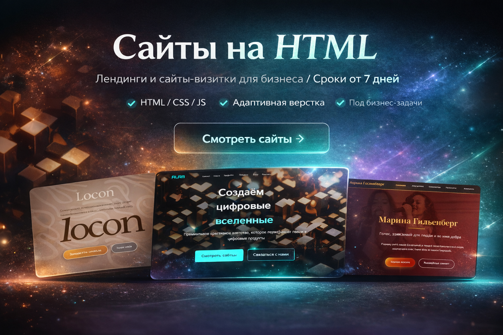

Портфолио Артёма Цветкова
Современные сайты и визуал
3 направления
сайты, логотипы, карточки товаров
Адаптивная верстка
аккуратно выглядит на ПК и телефоне
Быстрая связь
проще всего через Telegram
Современные сайты и визуал
для бизнеса
Делаю лендинги, сайты-визитки, логотипы и карточки товаров. Чистая подача, понятная структура и аккуратный визуал без перегруза.
Главный кейс

Что ты получаешь: современную подачу, аккуратную структуру, адаптивность и понятный процесс работы.
Чистая верстка Визуал под нишу Удобные правки
Что я делаю
Три направления упаковки
Можно заказать отдельно или собрать цельную систему: сайт, логотип и визуалы для карточек товаров.
Сайты
Лендинги и сайты-визитки с современным первым экраном, понятной структурой и адаптивной версткой.
- HTML / CSS / JavaScript
- Под ключ или по готовому ТЗ
- Ссылки на реальные проекты
Логотипы
Логотипы для брендов и малого бизнеса: от clean digital до более характерной нишевой подачи.
- Подбор направления под нишу
- Современная подача
- Удобно сочетать с сайтом
Карточки товаров
Инфографика для WB, Ozon и рекламы: структура, акценты на преимуществах и несколько слайдов.
- Слайды под преимущества
- Подача под маркетплейсы
- Улучшение восприятия товара
Цены
Понятный старт по бюджету
Это не жёсткий прайс, а ориентир, чтобы тебе было проще понять, с каким запросом обращаться.
Лендинг
от 8 000 ₽
- 1 длинная страница
- Адаптивность
- Базовые анимации
Чаще выбирают
Сайт-визитка
от 12 000 ₽
- Несколько смысловых блоков
- Контакты и CTA
- Сильнее подача бренда
Логотип
от 3 500 ₽
- Направление под нишу
- Чистая подача
- Файлы для использования
Карточки товара
от 2 500 ₽
- Слайды под преимущества
- Инфографика
- Подача под маркетплейсы
Что входит в работу
Не просто красиво, а удобно в использовании
Этот блок сразу снимает часть вопросов до старта.
Адаптивность
Сайт нормально выглядит на телефоне, планшете и ПК.
Базовая SEO-структура
Title, description, понятные заголовки и чистая структура страницы.
Подключение ссылок
Кнопки, переходы, внешние ссылки на проекты и контакты.
Правки и финальная передача
Доработки по согласованию и аккуратная передача результата.
Почему мне можно доверять
Даже если ты ищешь не агентство, а сильного исполнителя
Я компенсирую отсутствие лишней бюрократии аккуратной работой и понятным процессом.
Аккуратная работа
Слежу за отступами, логикой блоков и тем, как проект считывается целиком.
Быстрый отклик
Не люблю тянуть коммуникацию. Быстро отвечаю и двигаю проект по этапам.
Возможность доработок
Проект не бросается на полпути — его можно довести до более сильной версии.
Работа под задачу
Собираю решение под конкретную нишу, а не вставляю одну и ту же форму всем подряд.
Личный блок
Почему я вообще этим занимаюсь
Мне нравится превращать сырую идею в подачу, которую можно уверенно показать людям.
Я люблю момент, когда у проекта появляется лицо: понятный первый экран, сильные акценты, аккуратная сетка и ощущение, что всё собрано не случайно. Именно за это я люблю сайты и визуальную упаковку.
Мне близок подход без лишнего пафоса: сделать так, чтобы результат действительно работал на восприятие бизнеса, а не просто выглядел “модно”.
Хочу, чтобы мои проекты выглядели так, будто их можно с уверенностью показать уже сегодня — без ощущения “сырости”.
Связаться со мной
Можешь написать сразу по делу
Нужен сайт, логотип, карточки товара или полный комплект? Напиши нишу, цель, желаемый срок и примеры того, что нравится.
Telegram@ARTEM_TS1
Emailartm_ts1@bk.ru
GitHubartmtsvetkov04-prog
Форма заявки
Удобно оставить заявку без переписки
Форма откроет письмо с уже заполненной структурой — останется только отправить.